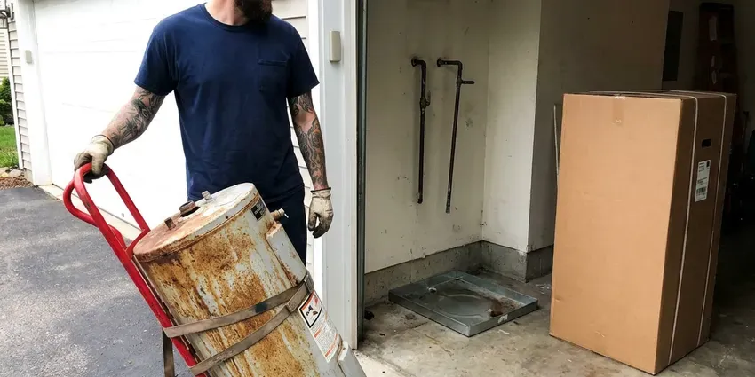
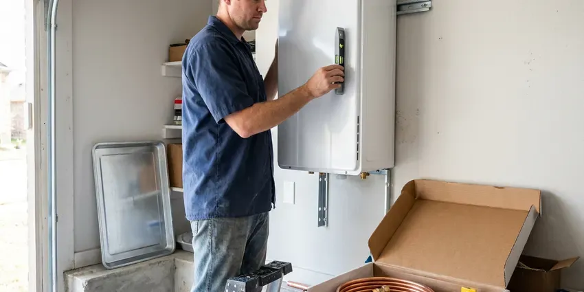
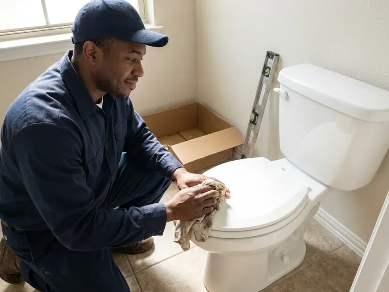
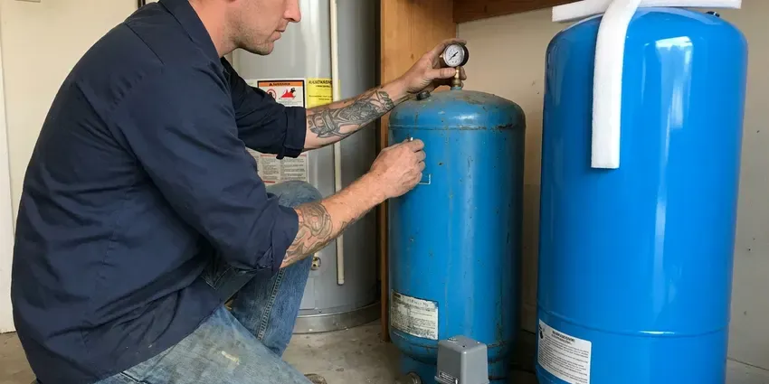

Sewer Replacement in Vermillion, SD
Driveway over the sewer line? Pipe bursting pulls new pipe through the old path. Sewer replacement in Vermillion, SD.
- Camera Footage You Can Keep
- Flat Pricing
- Local Crews
- Trenchless Pipe Bursting

Replace That Old Clay Sewer in Vermillion, SD.
We pull the permit and book the inspector for you.
New Sewer Laterals for Vermillion, SD Homes
HWR Plumbing replaces sewer laterals, the 4-inch pipe that carries everything from your house to the city main or septic tank. Basements are common in South Dakota homes, which puts water heaters, softeners and main drains below grade where sump systems often play a role. Old clay and cast iron do not flex, so they crack. We put in new PVC or HDPE with steady fall, bedded so it stays at that slope for decades, and a cleanout at the house. Then we camera it again.
Our expertise includes:
- Belly and offset joint correction
- Open-trench PVC with correct slope and bedding
- Two-way cleanout installs at the foundation

Additional Plumbing Replacement Services in Vermillion, SD
When repairs are no longer enough, our replacement services in Vermillion, SD deliver modern, efficient equipment installed right.

Water Heater Replacement in Vermillion

Tankless Water Heater Replacement in Vermillion



Customers
Why Choose HWR Plumbing for Sewer Replacement in Vermillion, SD?
Slope is where replacements go wrong. A line without enough fall leaves solids behind. Too steep and water outruns the waste, and either way you end up with clogs on brand new pipe, so we set grade with a level and check it on camera. A quarter inch per foot is the usual target.
- Camera Verified, A final camera pass confirms the new line so you know it is clean and properly graded.
- Known Ground, We know how local soils behave in an open trench and where old laterals usually sit.
- Right Tools, Sonde locators, bursting heads and fusion machines for HDPE are on our trucks.
Citywide Coverage
We handle houses, duplexes, small apartment buildings and storefronts across Vermillion. Each one gets scoped first. Bigger buildings bring bigger pipe and more planning, but the steps are the same, and the footage still decides the method.
Experienced Team
Every plumber here can glue PVC properly, run the HDPE fusion machine, and set a cast iron transition with a shielded coupling. Connections cause most sewer trouble. We test each new line with water and camera before backfill, and we do it on every job.
Safety-First Approach
Every sewer replacement in Vermillion gets a permit. The inspector looks at fall and cleanouts before backfill. If something needs changing, it gets fixed before the dirt goes back, and you get a copy of the signed inspection when we are done.
Trusted Certified Vermillion Plumbing Services Professionals
At HWR Plumbing, we take pride in licensed, certified plumbing services throughout Vermillion, SD. Credentials matter in this trade. Our plumbers hold recognized industry credentials, and they follow strict safety and quality rules on every repair, installation and maintenance call we run.
Call Us Now PHCC Plumbing Contractor Recognition
PHCC Plumbing Contractor Recognition Better Business Bureau (BBB) Accreditation
Better Business Bureau (BBB) Accreditation Angi Certified Pro
Angi Certified Pro ISO 9001 Quality Management Certification
ISO 9001 Quality Management CertificationSewer Replacement Work in Vermillion, SD
Emergency Sewer Line Replacement in Vermillion, SD
Sewage coming up a floor drain or tub is an emergency. Stop using sinks, toilets and the washer. We open the cleanout to relieve the backup, run a camera to find the break, and when the pipe has caved in, we dig to that spot immediately, putting in a section of new pipe to get you flowing before planning the full replacement.

Sewer Cleanout Installation in Vermillion, SD
A lot of older houses have no outside cleanout. Without one, the plumber has to pull a toilet or go through the roof vent. When we replace a sewer line we add a two-way cleanout near the foundation, with a cap at ground level you can find, so future cleaning or camera work is quick and cheap.
Emergency Sewer Replacement in Vermillion, SD
Wastewater backing into the house is urgent. Call (605) 480-9736. We open the cleanout to relieve pressure, camera the line to find the break, and make a section repair when that is enough to get the house working, with a plan and a price for the full line if the camera shows more trouble.
Clay and Orangeburg Pipe Replacement in Vermillion, SD
Clay pipe came in short sections with a joint every two or three feet. That is a lot of joints for roots to find. Orangeburg is worse, since the tar-paper wall flattens slowly under the dirt above it, and both are good candidates for bursting because they break apart easily. Fast pulls.
Advanced Diagnostics for Sewer Issues in Vermillion, SD
Diagnosis comes before price. Video tells us the problem and the sonde tells us the spot. We sometimes add a hydro-jet cleaning first, because a line full of grease can hide a crack, and a clean pipe gives a much more honest picture of its condition. Guesswork costs money.
Residential Sewer Replacement in Vermillion, SD
Most house laterals run 30 to 100 feet. Some are two feet down, some are eight. We measure both before quoting, check whether the run passes under a driveway, porch or tree, then pick trench or trenchless based on what is in the way, so the estimate you sign is the price you pay.
Traditional Trench Sewer Replacement in Vermillion
An open trench gives full access to the pipe from the house to the main. We dig with a mini excavator and hand dig near utility marks. The old pipe comes out, the trench bottom gets a bed of gravel or sand, and new 4-inch PVC goes in at a steady quarter inch of fall per foot, checked with a level before backfill. Then the camera.

Open-Trench Sewer Replacement in Vermillion, SD
Trenching lets us fix grade. That is its big advantage. When an old line has a sag that holds water and solids, bursting would just follow the same sag, so we dig and reset the pipe on a proper bed at a proper fall. Bellies disappear.
Sewer Replacement Near Me in Vermillion, SD
Our crews work on sewer lines across Vermillion every week. Whole blocks were often built with the same pipe. If the house next door had clay pipe full of roots, yours probably does too, which gives us a good guess before we scope. Patterns help.
Local plumbers know local sewer layouts. Some laterals run out the front, some out the back to an alley. That affects depth, length and which method fits, and in Vermillion we often know it before the truck pulls up. We still camera everything.
HWR Plumbing at a Glance
- Licensed and insured plumbers serving Vermillion, SD
- Same-day appointments and 24/7 emergency response
- Clear written estimates, no hidden fees
- 4.8-star rated by 304+ South Dakota customers
Vermillion Map
Vermillion Information
- Population
- 12,011
- Area codes
- Local
- Service area
- Vermillion and communities within 40 miles
- Nearby
- Yankton, Harrisburg, Tea, Sioux Falls
Clay and cast iron sewer pipe cracks, sags and lets roots in after enough decades, and no amount of snaking fixes that.
Talk to a Plumber
Reach out to HWR Plumbing for reliable plumbing work done by licensed pros in Vermillion, SD.
Our Specialized Plumbing Services in Vermillion, SD
At HWR Plumbing, you get every kind of plumbing service from one company across Vermillion, SD. From leak detection to full system installs, our team works fast and charges fair prices on homes and commercial properties alike. Here are the core services we offer:


How We Rebuild a Sewer Line in Vermillion, SD
Most of the decisions happen before anyone digs.
Free Estimate
Call HWR Plumbing at (605) 480-9736. You get the camera video and a written price.
Choose the Method
Trench or trenchless, we explain both and recommend one. The footage decides it.
Prep the Site
Utilities get marked, the permit gets filed, and we lay mats to protect the lawn from equipment.
Frequently Asked Questions About Sewer Replacement in Vermillion
The range is wide. Figure anywhere from $3,000 to $25,000 and up. Length and depth move the number most, followed by soil conditions, method, and whether concrete or a slab is in the way. We price it after the camera inspection, in writing.
No. Bursting needs an open path through the old pipe. A fully collapsed section, a sharp bend, or rock around the pipe can rule it out, and a belly cannot be fixed by bursting since the new pipe follows the same sag, so an open trench is better for grade problems. Camera first.
Rarely a good idea. Code, utility marks and slope all have to be right. A homeowner can dig, but getting a quarter inch per foot of fall over 60 feet, tying into the city main with the right fitting, and passing inspection is harder than it looks, and mistakes mean digging again.
We put a labor warranty in writing on every replacement. PVC and HDPE makers carry their own warranties. If one of our joints or connections ever fails, we come back and fix it at no cost, and the terms are on your estimate before you sign. Ask for the length.
A low spot. Water and solids sit in it. It happens when the soil under part of the pipe settles or was never compacted, and over time it collects paper and grease until the line backs up. Fixing it means digging and regrading.
Neither is better everywhere. Trenchless saves the yard. An open trench fixes grade problems and works when the old pipe has collapsed, so the footage tells us which to use. Some jobs use both.
Almost always, yes. We handle the application and inspection. Most departments want to see the new pipe in the open trench, and we schedule digging around that. You get the signed permit at the end.
Technically, maybe. It needs a permit, locates and correct slope.
Hear From Customers Who Hired Our Plumbing Experts
Patricia H.
We had a slab leak that two other companies could not find. HWR Plumbing located it in under an hour with a listening device. They rerouted the line through the attic instead of breaking up the floor, so we kept our kitchen tile.
Slab Leak Repair · Tea, SDMark T.
The floor drain in our office break room backed up every few weeks. The plumber ran a cable, then put a camera down and found roots at a joint about thirty feet out. Seeing it on the screen made the decision easy.
Drain Cleaning · Harrisburg, SD
Lisa C.
Water was pouring out from under the washing machine on a holiday weekend. HWR Plumbing talked me through closing the valves over the phone and had a plumber at the house within ninety minutes. It was a burst fill hose.
Emergency Plumbing · Brandon, SDDiane F.
My kitchen faucet had dripped for months and I finally got tired of hearing it at night. HWR Plumbing came out the next morning, replaced the cartridge and the O rings, and tightened a loose base that was letting water under the sink.
Faucet Repair · Tea, SD
Daniel K.
A pipe burst in the garage ceiling at 11 at night. Someone answered on the second ring, and the plumber was in my driveway about fifty minutes later. He shut off the main, cut out the split section, and had water back on before 2 am.
Emergency Plumbing · Harrisburg, SDJessica T.
We were adding a gas range in a kitchen remodel and needed a new line run from the meter. The plumber pulled the permit, ran the pipe through the crawl space, and had it inspected and approved within the week.
Gas Line Repair · Vermillion, SD